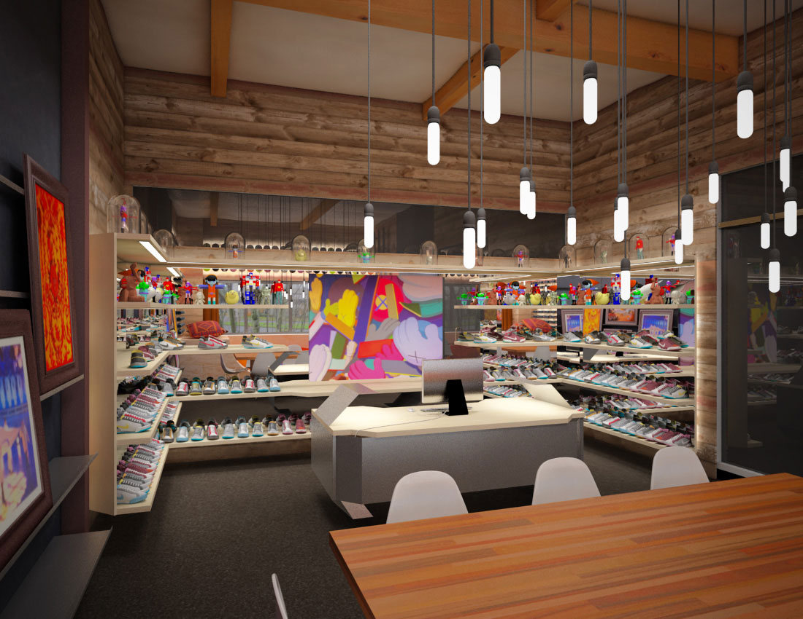

Quel est le processus de création d’un modèle ?
Lorsqu’il s’agit d’un produit conçu pour un sport, on écoute toujours ce que l’athlète a à partager. L’idée est de designer un produit qui leur permet d’atteindre leur meilleur potentiel. C’est d’ailleurs ce que je préfère dans ce métier, résoudre un problème tout en travaillant main dans la main avec les athlètes.